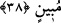

et-Te’vîlâtü’n-Necmiyye’de şöyle der: Yani, onlar üç gruba ayrılmıştır. Bir grup,
şerîat ve tarîkat ayakları üzere yürüyerek çeşitli makâmları geçip Allâh’ın yakınlığına
ulaşarak Allâh’a ibâdet ederler. Bunlar, velîler ve sıddîklardır. Onlar ehlullahın
havassı/seçkinleridir. Bir grup da şerîatın zâhiri ve bununla ilgili amelleri yaparak
Allâh’a ibâdet ederler. Bunlar ise mü’min müslümanlardır. Onlar cennet ehli
kimselerdir. Diğer bir grup ise tabîatlarının gereği olarak hevâ ve heveslerine taparlar
ve de Allâh’a ibâdet ettiklerini iddiâ ederler. Onların durumu kâfirlerin putlara tapıp
“Biz onlara sadece bizi Allâh’a yaklaştırsınlar diye tapıyoruz.” (ez-Zümer, 39/3)
demelerine benzer. Bunlar hak ehlini inkâr ederler. Bid‘at, hevâ, ve riyâ ehlidirler. İşte
onlar cehennem ehli kimselerdir.
“Artık büyük bir günü” yâni korkusu çok büyük, hesapların görüldüğü ve
karşılıkların verildiği kıyâmet gününü “görmekten ötürü vay kâfirlerin haline!” Onlar
ayrılığa düşenlerdir. Âyette geçen “veyl (vay haline)” kelimesi, helâk anlamına gelir.
38. Bize geldikleri gün ne güzel işitir, ne güzel görürler! Ama o zâlimler, bugün
apaçık sapıklık içindedirler.
“Bize geldikleri gün” hidâyeti “ne güzel işitir, ne güzel görürler!” Bu ifâde, onların
işitme ve görmelerindeki keskinliğe olan hayreti bildirmektedir. Kıyâmet gününde
onların hesap ve karşılık için gelmeleri, dünyada sağır ve kör olduktan sonra şaşılmaya
değer bir husustur. Taaccüb/şaşma, sebebini bilmediği bir şeyi büyük görmektir. Daha
sonra bu kelime sırf büyük görme için kullanılmıştır.
“Ama o zâlimler bugün” dünyada “apaçık bir sapıklık içindedirler.” Yani onlar
sonu bilinmeyen açık bir hatâ içindedirler. Çünkü kendilerine fayda verecek işitme ve
görmeden tamamen gafil kalmışlardır.
Boşa geçirme ömrünü âh vâhla
Fırsat azîz, vakitde kılıçtır zîrâ
Yarın pişmanlık götürür seni telâşa
Âh u vâh etme, kulak ver kelâm-ı Hakk’a
39. Onları şu hasret gününe karşı uyar ki, o zaman kendileri gaflet içinde